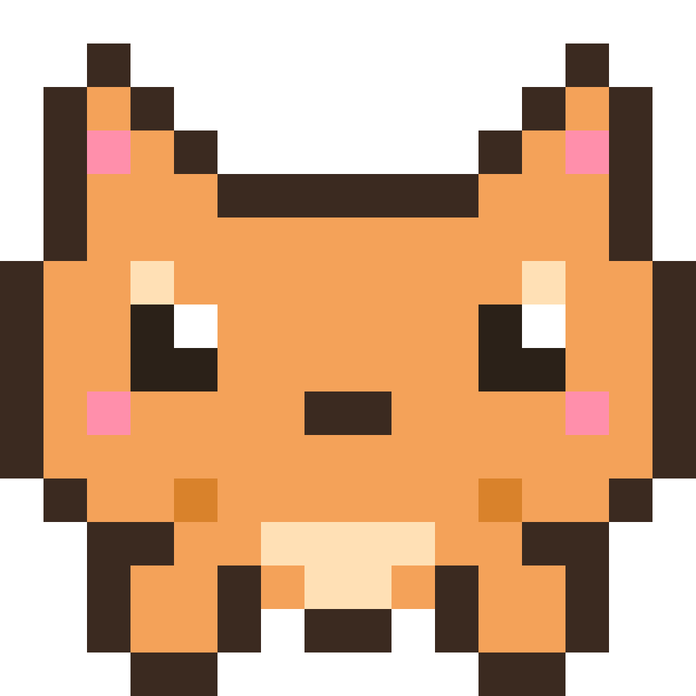
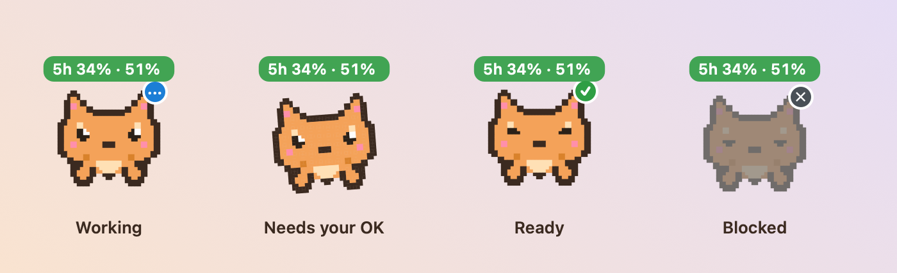
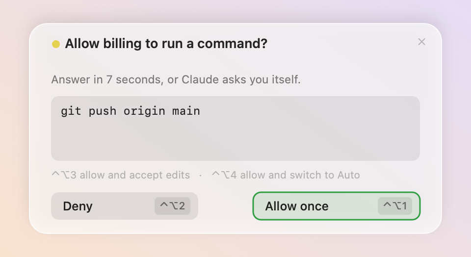
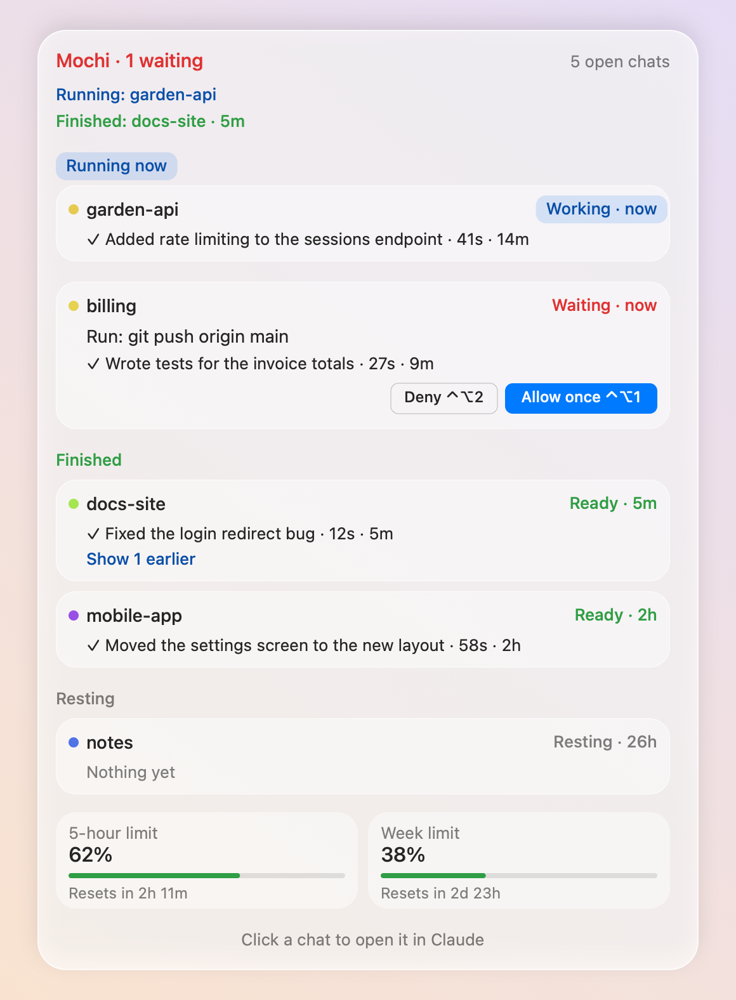
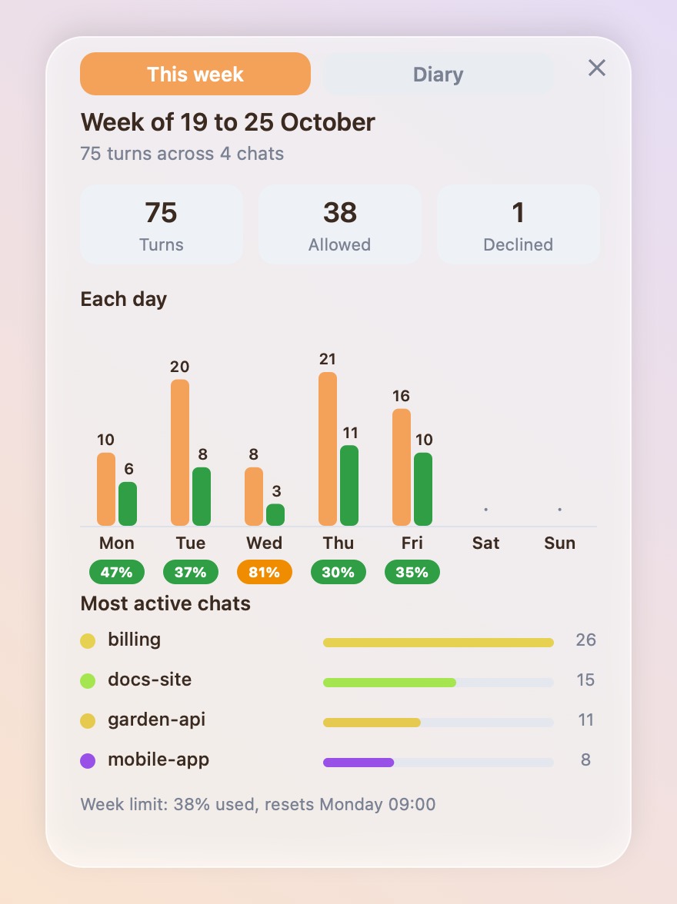
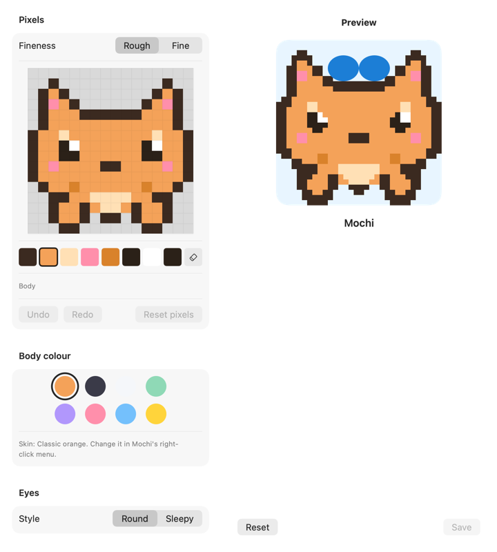
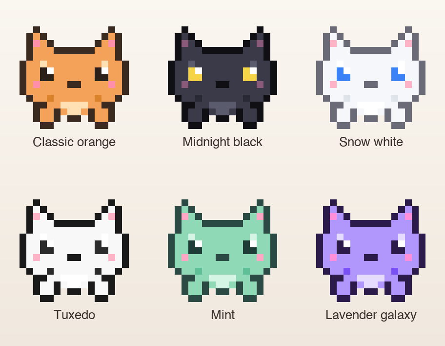

<meta name="claude:viewport-fit-sides" content="cover">
<title>Mochi, a Claude Code companion</title>
<meta name="description" content="Mochi is a pixel-art companion for Claude Code on macOS. She shows what each chat is doing and lets you answer requests from her card.">
<link rel="preconnect" href="https://fonts.googleapis.com">
<link rel="preconnect" href="https://fonts.gstatic.com" crossorigin>
<link rel="stylesheet" href="https://fonts.googleapis.com/css2?family=Nunito:wght@400;700;900&family=Silkscreen&family=JetBrains+Mono:wght@400;600&display=swap">
<style>
/* Layout: one column of text, with the screens and features set in their own grids below it.
   Palette: her body orange on warm cream, ink brown for text, lavender for a single quiet accent. */
:root {
  --bg: #FFF7EC;
  --surface: #FFFFFF;
  --ink: #3B2A20;
  --muted: #6B5A4E;
  --accent: #F4A259;
  --accent-ink: #8A4410;
  --lav: #B197FC;
  --line: #EADBC6;
  --green: #2F9E44;
  --red: #C92A2A;
  --display: "Nunito", "Helvetica Neue", Arial, sans-serif;
  --pixel: "Silkscreen", "Courier New", monospace;
  --mono: "JetBrains Mono", "Menlo", monospace;
  color-scheme: light;
}
@media (prefers-color-scheme: dark) {
  :root:not([data-theme="light"]) {
    --bg: #1F1812;
    --surface: #2A2019;
    --ink: #F7EBDD;
    --muted: #C9B7A5;
    --accent: #F4A259;
    --accent-ink: #F4A259;
    --lav: #B9A3FF;
    --line: #3D2E23;
    --green: #69DB7C;
    --red: #FF8787;
    color-scheme: dark;
  }
}
:root[data-theme="dark"] {
  --bg: #1F1812;
  --surface: #2A2019;
  --ink: #F7EBDD;
  --muted: #C9B7A5;
  --accent: #F4A259;
  --accent-ink: #F4A259;
  --lav: #B9A3FF;
  --line: #3D2E23;
  --green: #69DB7C;
  --red: #FF8787;
  color-scheme: dark;
}

* { box-sizing: border-box; }
body {
  margin: 0;
  background: var(--bg);
  color: var(--ink);
  font-family: var(--display);
  font-size: 17px;
  line-height: 1.6;
  padding-left: max(16px, env(safe-area-inset-left, 0px));
  padding-right: max(16px, env(safe-area-inset-right, 0px));
}
.wrap { max-width: 1040px; margin: 0 auto; }
section { padding-block: 64px; }
h1, h2, h3 { line-height: 1.12; text-wrap: balance; margin: 0; }
h2 { font-size: clamp(1.7rem, 4vw, 2.4rem); font-weight: 900; }
h3 { font-size: 1.15rem; font-weight: 900; }
p { margin: 0; max-width: 62ch; }
a { color: var(--accent-ink); }
img { max-width: 100%; height: auto; display: block; }
:focus-visible { outline: 3px solid var(--lav); outline-offset: 3px; border-radius: 4px; }

.label {
  font-family: var(--pixel);
  font-size: 12px;
  letter-spacing: 0.12em;
  text-transform: uppercase;
  color: var(--accent-ink);
}

/* Top bar */
.top {
  display: flex; align-items: center; justify-content: space-between; gap: 16px;
  padding-block: 20px; flex-wrap: wrap;
}
.brand { display: flex; align-items: center; gap: 10px; font-weight: 900; color: var(--ink); text-decoration: none; }
.brand img { width: 36px; height: 36px; }
.top nav { display: flex; gap: 18px; flex-wrap: wrap; font-weight: 700; }
.top nav a { color: var(--ink); text-decoration: none; }
.top nav a:hover { text-decoration: underline; }
.theme {
  font: inherit; font-size: 1.15rem; line-height: 1; cursor: pointer;
  padding: 2px 4px; border: 0; border-radius: 6px;
  background: transparent; color: var(--ink);
}

/* Hero */
.hero {
  display: grid; gap: 40px; align-items: center;
  grid-template-columns: minmax(0, 1.1fr) minmax(0, 0.9fr);
  padding-block: 40px 56px;
}
.hero h1 { font-size: clamp(2.3rem, 6vw, 4rem); font-weight: 900; margin-top: 14px; }
.hero .lede { margin-top: 20px; font-size: 1.15rem; color: var(--muted); }
.cta { display: flex; gap: 12px; flex-wrap: wrap; margin-top: 28px; }
.button {
  display: inline-block; padding: 12px 22px; border-radius: 999px;
  font-weight: 900; text-decoration: none; border: 2px solid var(--ink);
}
.button.primary { background: var(--accent); color: #2A1A10; }
.button.ghost { background: transparent; color: var(--ink); }
.hero-art {
  position: relative; display: grid; place-items: center;
  aspect-ratio: 1 / 1; max-width: 420px; width: 100%; justify-self: center;
  background: var(--surface); border: 2px solid var(--line); border-radius: 28px;
}
.hero-art img { width: 62%; animation: hop 2.4s ease-in-out infinite; image-rendering: pixelated; }
@keyframes hop { 0%, 100% { transform: translateY(0); } 50% { transform: translateY(-10px); } }

/* Features */
.features {
  display: grid; gap: 16px; margin-top: 32px;
  grid-template-columns: repeat(auto-fit, minmax(240px, 1fr));
}
.feature { border-top: 4px solid var(--accent); padding-top: 16px; }
.feature p { margin-top: 8px; color: var(--muted); }

/* Screens */
.screens { display: grid; gap: 28px; margin-top: 32px; grid-template-columns: repeat(auto-fit, minmax(min(100%, 300px), 1fr)); }
.screen figure { margin: 0; }
.screen img { border-radius: 16px; border: 1px solid var(--line); background: var(--surface); }
.screen figcaption { margin-top: 10px; color: var(--muted); font-size: 0.95rem; }
.screen.wide { grid-column: 1 / -1; }
.screen.wide img { max-height: 520px; width: auto; margin-inline: auto; }

/* Install */
.install { background: var(--surface); border-radius: 28px; border: 2px solid var(--line); padding: 32px; }
.steps { margin: 20px 0 0; padding: 0; list-style: none; display: grid; gap: 14px; counter-reset: step; }
.steps li { counter-increment: step; display: grid; grid-template-columns: 36px minmax(0, 1fr); gap: 12px; align-items: start; }
.steps li::before {
  content: counter(step); display: grid; place-items: center; width: 36px; height: 36px;
  border-radius: 50%; background: var(--accent); color: #2A1A10; font-weight: 900;
}
pre {
  position: relative; margin: 12px 0 0; padding: 14px 16px; overflow-x: auto;
  background: var(--bg); border: 1px solid var(--line); border-radius: 12px;
  font-family: var(--mono); font-size: 0.9rem; line-height: 1.5;
}
.copy {
  margin-top: 8px; font: inherit; font-weight: 700; font-size: 0.9rem;
  padding: 6px 14px; border-radius: 999px; border: 2px solid var(--ink);
  background: transparent; color: var(--ink); cursor: pointer;
}
.note { margin-top: 22px; color: var(--muted); font-size: 0.95rem; }

/* Status */
.status-list { margin: 16px 0 0; padding-left: 20px; color: var(--muted); }
.status-list li { margin-block: 6px; }

footer { padding-block: 40px 56px; color: var(--muted); font-size: 0.95rem; border-top: 1px solid var(--line); }
footer .wrap { display: flex; justify-content: space-between; gap: 16px; flex-wrap: wrap; }

@media (max-width: 760px) {
  .hero { grid-template-columns: 1fr; }
  .hero-art { max-width: 280px; }
  section { padding-block: 48px; }
  .install { padding: 22px; }
}
@media (prefers-reduced-motion: reduce) {
  .hero-art img { animation: none; }
}
</style>

<header class="wrap top">
  <a class="brand" href="#top">Mochi</a>
  <nav aria-label="Page">
    <a href="#what">What she does</a>
    <a href="#screens">Screens</a>
    <a href="#install">Install</a>
    <a href="https://github.com/EmmaNguyen/mod-pet">GitHub</a>
    <button class="theme" type="button" id="theme-toggle" aria-label="Switch to light theme">&#9790;</button>
  </nav>
</header>

<main id="top" class="wrap">

<section class="hero" aria-labelledby="hero-title">
  <div>
    <p class="label">100 commits and counting</p>
    <h1 id="hero-title">A pixel cat that tells you what Claude is doing.</h1>
    <p class="lede">Mochi is a companion for Claude Code on macOS. She floats above your message box, shows the state of every chat, lets you allow or deny requests from her card, and keeps an eye on your usage limits.</p>
    <div class="cta">
      <a class="button primary" href="#install">Install Mochi</a>
      <a class="button ghost" href="https://github.com/EmmaNguyen/mod-pet">View the code</a>
    </div>
  </div>
  <div class="hero-art">
    
  </div>
</section>

<section id="what" aria-labelledby="what-title">
  <p class="label">What she does</p>
  <h2 id="what-title">Watch your chats without watching them.</h2>
  <div class="features">
    <div class="feature">
      <h3>Status at a glance</h3>
      <p>Her pose and badge show working, waiting for your OK, ready, or blocked. You can read the state from across the room.</p>
    </div>
    <div class="feature">
      <h3>Answer from her card</h3>
      <p>When a chat asks for permission, her card has Allow and Deny. The card copies Claude's own dialog, so nothing is new to learn.</p>
    </div>
    <div class="feature">
      <h3>Every chat in one list</h3>
      <p>Chats are grouped into running now, waiting, finished, and resting. Click a box to open that chat in Claude.</p>
    </div>
    <div class="feature">
      <h3>Plan usage</h3>
      <p>A label shows your 5-hour and weekly limits. Her eyes get tired past 70%, and a countdown appears in the last hour.</p>
    </div>
    <div class="feature">
      <h3>Quick note and talk</h3>
      <p>Start a new session with a typed note, or speak it with your Mac's speech recognition. Nothing is sent until you press Enter.</p>
    </div>
    <div class="feature">
      <h3>Her week and diary</h3>
      <p>See each day's turns and approvals, and twelve weeks as squares. Mochi keeps only daily counts, with no chat content.</p>
    </div>
    <div class="feature">
      <h3>Shortcuts from any app</h3>
      <p>Answer requests from anywhere with F7 to F10, or with Control-Option-1 to 4 when the F-keys control brightness and volume.</p>
    </div>
    <div class="feature">
      <h3>Skins and Studio</h3>
      <p>Choose one of six skins, or open Mochi Studio to change her body, eyes, accessory, and name, with a live preview.</p>
    </div>
  </div>
</section>

<section id="screens" aria-labelledby="screens-title">
  <p class="label">Screens</p>
  <h2 id="screens-title">What it looks like</h2>
  <div class="screens">
    <figure class="screen wide">
      
      <figcaption>Four poses, four states. The badge on her ear shows what the chat needs.</figcaption>
    </figure>
    <figure class="screen">
      
      <figcaption>The approval card. Deny and Allow once, with their keys.</figcaption>
    </figure>
    <figure class="screen">
      
      <figcaption>Every chat in one list, grouped by what needs you.</figcaption>
    </figure>
    <figure class="screen">
      
      <figcaption>This week: turns and approvals each day.</figcaption>
    </figure>
    <figure class="screen">
      
      <figcaption>Mochi Studio: paint her face and pick her accessory.</figcaption>
    </figure>
    <figure class="screen wide">
      
      <figcaption>Six skins, chosen from her right-click menu.</figcaption>
    </figure>
  </div>
  <p class="note">These images are drawn by Mochi's own views with made-up chats, so no real chat names appear.</p>
</section>

<section id="install" aria-labelledby="install-title">
  <div class="install">
    <p class="label">Install</p>
    <h2 id="install-title">Set her up in three steps.</h2>
    <ol class="steps">
      <li>
        <div>
          <h3>Install the Xcode command line tools</h3>
          <p>Mochi builds from source, so this is required.</p>
          <pre><code>xcode-select --install</code></pre>
          <button class="copy" type="button" data-copy="xcode-select --install">Copy</button>
        </div>
      </li>
      <li>
        <div>
          <h3>Clone the repository and let Claude set it up</h3>
          <p>Open Claude Code in the folder and say:</p>
          <pre><code>Follow CLAUDE-SETUP.md in this folder to set up Mochi.</code></pre>
          <button class="copy" type="button" data-copy="Follow CLAUDE-SETUP.md in this folder to set up Mochi.">Copy</button>
        </div>
      </li>
      <li>
        <div>
          <h3>Allow notifications</h3>
          <p>Mochi appears in the bottom-right corner of the screen. Allow notifications when macOS asks.</p>
        </div>
      </li>
    </ol>
    <p class="note"><strong>Requirements:</strong> macOS 13 or later (the Liquid Glass look needs macOS 26; earlier versions use a frosted style), Claude Code 2.1 or later with the Claude desktop app, and the Xcode command line tools.</p>
    <p class="note"><strong>Heads-up:</strong> the app is not notarised yet, so macOS may show a warning the first time you open it. Mochi is a work in progress, and parts may change.</p>
  </div>
</section>

<section aria-labelledby="status-title">
  <p class="label">Status</p>
  <h2 id="status-title">Where it stands.</h2>
  <ul class="status-list">
    <li>Works day to day on macOS 13 and later.</li>
    <li>Built from source for now. Notarisation is next, so the app will open without warnings.</li>
    <li>Support for Claude chats outside Claude Code is planned.</li>
    <li>Feedback and issues are welcome on <a href="https://github.com/EmmaNguyen/mod-pet/issues">GitHub</a>.</li>
  </ul>
</section>

</main>

<footer>
  <div class="wrap">
    <span>Mochi by Emma Nguyen. MIT licence.</span>
    <span><a href="https://github.com/EmmaNguyen/mod-pet">github.com/EmmaNguyen/mod-pet</a></span>
  </div>
</footer>

<script>
  // Theme: the system setting until the reader picks one, then their choice, kept in this browser only.
  (function () {
    var root = document.documentElement;
    var saved = null;
    try { saved = localStorage.getItem('mochi-theme'); } catch (e) {}
    if (saved === 'light' || saved === 'dark') root.setAttribute('data-theme', saved);
    var current = function () {
      var set = root.getAttribute('data-theme');
      if (set) return set;
      return window.matchMedia && window.matchMedia('(prefers-color-scheme: dark)').matches ? 'dark' : 'light';
    };
    var toggle = document.getElementById('theme-toggle');
    // The symbol shows the theme you will switch to: a sun in dark mode, a moon in light mode
    var label = function () {
      var dark = current() === 'dark';
      toggle.textContent = dark ? '\u2600\uFE0E' : '\u263E\uFE0E';
      toggle.setAttribute('aria-label', dark ? 'Switch to light theme' : 'Switch to dark theme');
    };
    toggle.addEventListener('click', function () {
      var next = current() === 'dark' ? 'light' : 'dark';
      root.setAttribute('data-theme', next);
      try { localStorage.setItem('mochi-theme', next); } catch (e) {}
      label();
    });
    label();
  })();
</script>
<script>
  // Copy buttons: write to the clipboard on click, and fall back to selecting the text when the browser refuses.
  document.querySelectorAll('.copy').forEach(function (button) {
    button.addEventListener('click', function () {
      var text = button.getAttribute('data-copy');
      var done = function () { button.textContent = 'Copied'; setTimeout(function () { button.textContent = 'Copy'; }, 1600); };
      var fallback = function () {
        var pre = button.parentElement.querySelector('pre');
        if (pre) { var range = document.createRange(); range.selectNodeContents(pre); var sel = window.getSelection(); sel.removeAllRanges(); sel.addRange(range); }
        button.textContent = 'Selected, press copy';
      };
      if (navigator.clipboard && navigator.clipboard.writeText) {
        navigator.clipboard.writeText(text).then(done, fallback);
      } else {
        fallback();
      }
    });
  });
</script>
